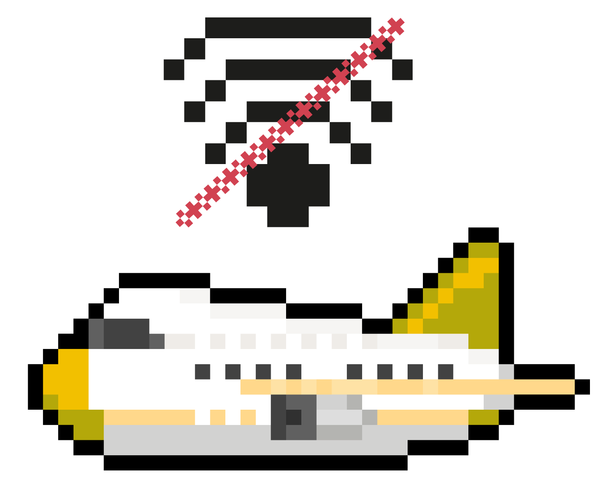

No Connection
You're offline.
Check your Wi-Fi or mobile data connection. We'll reconnect automatically once you're back online.
Waiting for connection…

No Connection
Check your Wi-Fi or mobile data connection. We'll reconnect automatically once you're back online.
Waiting for connection…